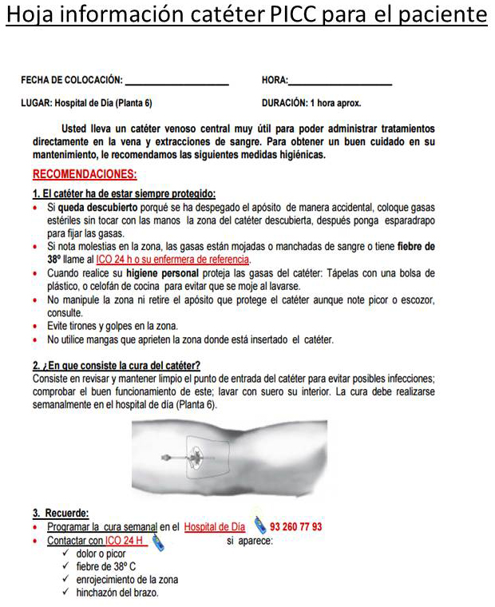

ICO 24h
MÓDULO 2 : Hospital de Día Oncológico
2.3 Accesos para la administración de quimioterapia
- A Acceso venoso periférico: son los accesos utilizados en la práctica clínica habitual. En el paciente oncológico, con múltiples venopunciones y administración de fármacos muy lesivos se intenta evitar este acceso reservándolo para pacientes en seguimiento.
- B Via PICC: Catéter central de inserción periférica. Tubo pequeño y blando insertado dentro de un vaso sanguíneo del brazo hasta vena cava superior (la ubicación correcta de la punta debe ser en tercio inferior de vena cava superior) Recomendado en tratamientos de 6 meses a un año. Técnica de introducción con micro punción (poco invasiva) Utilizando la técnica de Seldinger modificada sin intervención quirúrgica y colocado con ecógrafo por enfermería.
Cuando al paciente se le coloca un PICC se le facilita una hoja de información para sus cuidados, requiere un uso hospitalario estértil y debe de ser curado una vez por semana.
